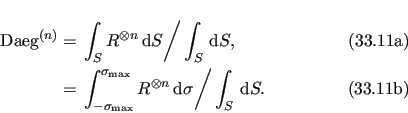
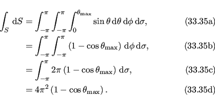

Next: Pseudo-ellipse frame order model Up: Free rotor isotropic cone Previous: Free rotor isotropic cone Contents Index
|
|
The rotation matrix is the full torsion-tilt rotation matrix of equation 12.74c on page ![[*]](crossref.png) .
.
The frame order matrix is
|  |
The surface normalisation factor is
|  |
The 1 degree frame order matrix with tensor rank-2 is
The 2 degree frame order matrix with tensor rank-4 consists of the following elements, using Kronecker product double indices from 0 to 8
The frame order matrix element simulation script from Section 16.2, page was used to compare the implementation of equations 16.36 and 16.37 above.
Frame order matrix
Daeg(1) and
Daeg(2) values were both simulated and calculated, both within and out of the motional eigenframe.
The in-frame
Daeg(1) and
Daeg(2) values are shown in figure 16.11.
The out-of-frame
Daeg(1) and
Daeg(2) values are shown in figure 16.12.
![\includegraphics[width=.5\textwidth]{images/frame_order_matrix/Sij_iso_cone_free_rotor_out_of_frame_theta_x_ens1000000.eps}](img823.png)